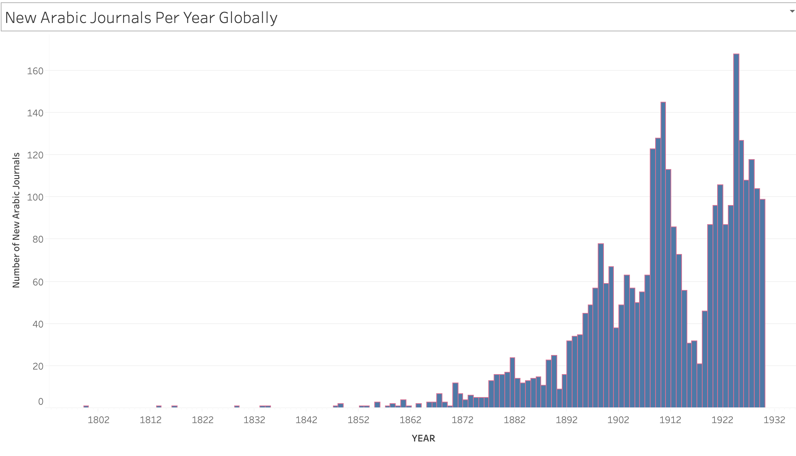
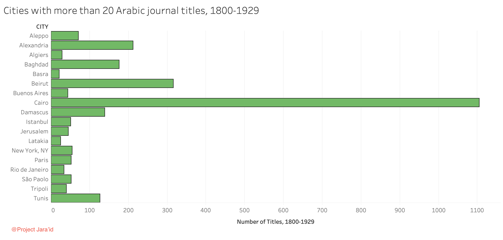
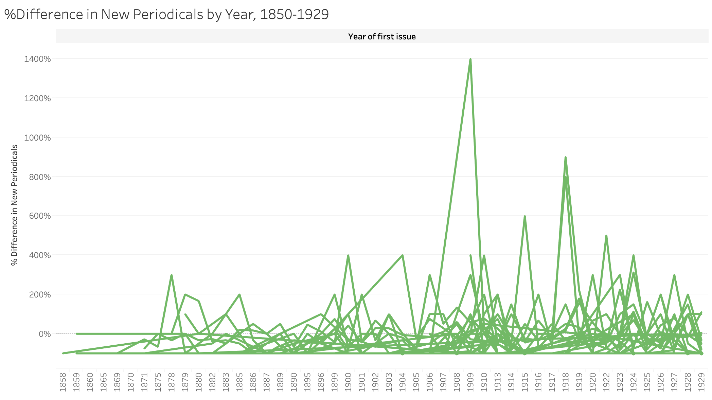

صور متحركة (GIF) من إعداد تيل غراليرت (باستخدام R وI)
توزيع الدوريات العربية حسب السنة، 1800-1929 توزيع الدوريات العربية كل خمس سنوات، 1800-1929


تصورات مرئية من إعداد آدم مستيان (باستخدام Tableau)
الصحافة العربية العالمية، 1800-1929 الصحافة العربية في منطقة المتوسط، 1800-1929 الصحافة العربية في الأمريكتين، 1890-1929 الصحافة العربية في الدولة العثمانية، 1800-1920  الدوريات العربية الجديدة سنوياً على مستوى العالم، 1800-1929  المدن التي صدر فيها أكثر من 20 عنوان دورية عربية، 1800-1929  الفارق في نسبة العناوين الجديدة سنوياً بالمئة، 1850-1929
×